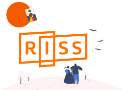
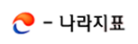

DBpia
DBpia - 학술콘텐츠 플랫폼
레포트를 작성하다보면 논문을 인용해야할 경우가 많다. 우리 학교 도서관을 이용해 접속하면 대부분의 자료를 무료로 열람할 수 있으니 참고하자.
바로가기→학술연구정보서비스(RISS)
RISS(Research Information Sharing Service)는 전국 대학이 생산하고 보유하며 구독하는 학술자원을 공동으로 이용할 수 있도록 개방된 대국민 서비스이다. 학위논문, 국내/외 학술논문, 학술지 등등의 자료를 열람 가능하다.
바로가기→

RISS
구글학술검색(Google Scholar)
빅카인즈

e-나라지표

Flaticon
SLADER
Polarbear는
자유롭게 웹페이지 개발을 공부하기 위해 모인 고려대학교 학생입니다.
학교를 자주 가지 못하는 학우들을 위해 학교를 소개하는 웹페이지를 만들면 어떨까?라는 아이디어가 학교생활에 유용한 사이트, 학교 곳곳을 탐방하는 길라잡이, 공부에 도움이 되는 여러 정보들 등의 생각을 낳았습니다.
이 사이트는 앞으로의 학교 생활에서 여러분들을 많이 도와줄 웹사이트들에 대한 소개입니다.
Read MoreCopyright © 2018 POLARBEAR | Designed by Template Mo